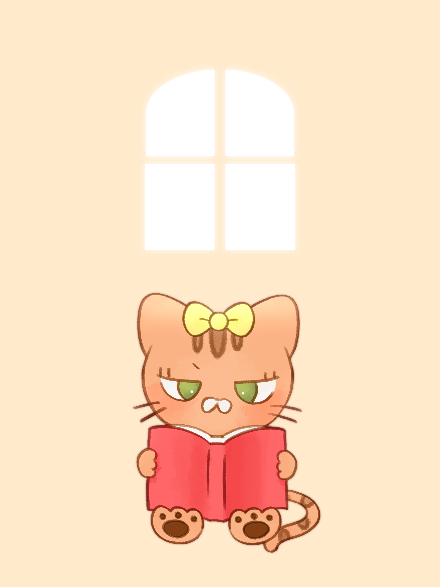
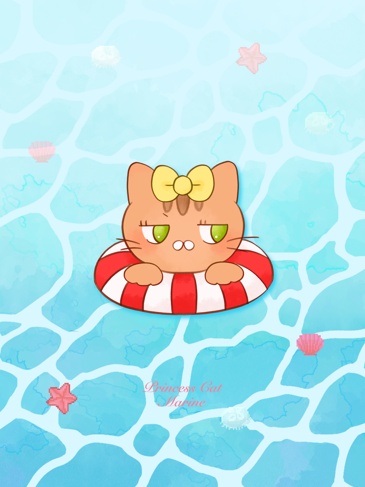
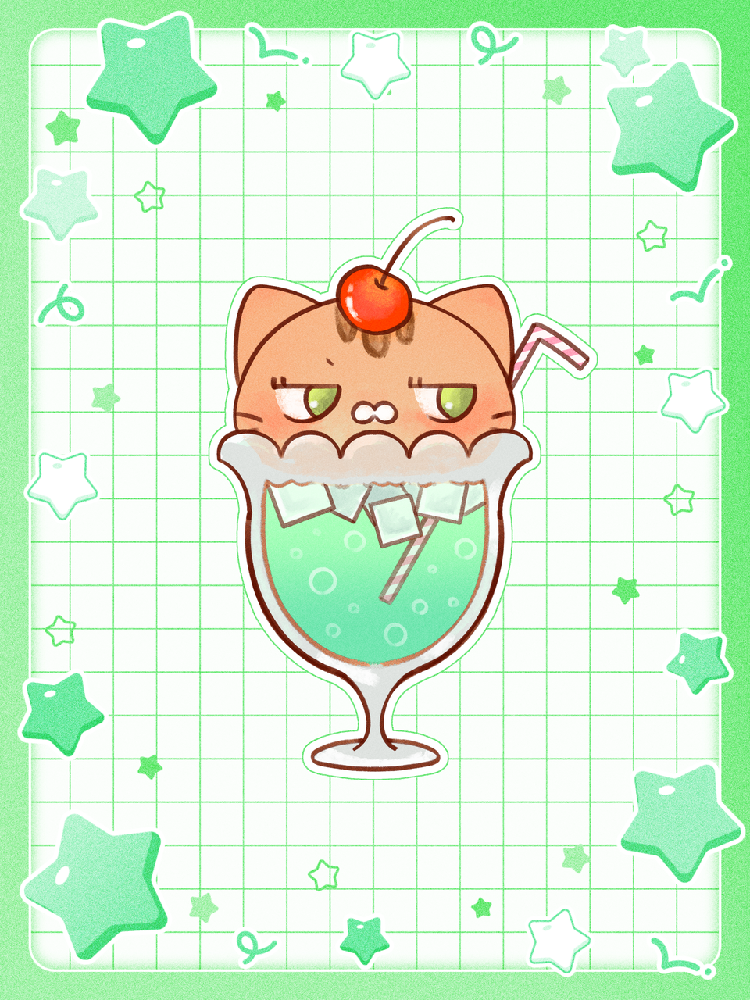
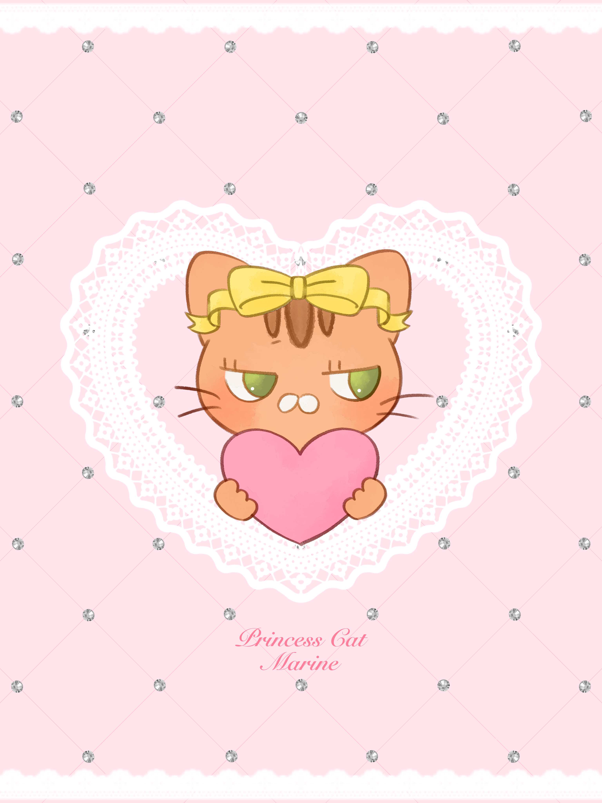

NEWS
- 2026/10/02 サイトがオープンしました
- 2026/10/1 ショートアニメ10月4日公開決定
- 2026/10/2 10月のカレンダー配布中！各種SNSからダウンロード🎵
- 2026/10/5 ショートアニメ「おなじ月を見ているね」公開中！
マリンについて
マリン
好奇心旺盛なベンガルの女の子。「なんで？」「どうして？」の気持ちを大切にしながら社会を学んでいく。
今月の描き下ろしイラスト♩

読書の秋

ぷかぷかマリン

クリームソーダ

ハートマリン
アニメ
マリンのYouTubeショート動画だよ♪


その他プロジェクト
いろんなワクワクする企画を準備中♪